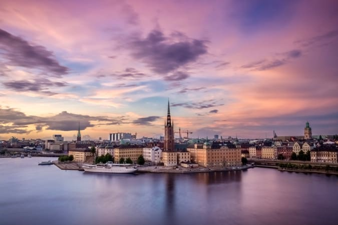

My Favourite Cities
I have travelled alot and like alot of cities but preferably i have 4 favourites
Amsterdam
I can’t say exactly how many times I’ve been to Amsterdam, but it’s in the double digits. And, for a brief time at the end of 2006, I lived there as a professional poker player (Seriously. It’s one of the more interesting random facts about me!).
The fast-paced life, friendly locals, easy access to the rest of Europe, picturesque canals, and stunning architecture keep me coming back. Plus, it being Amsterdam and all, there are tons of weird and quirky things to see and do there too!
In some ways, Amsterdam reminds me of my hometown of Boston, which might be why I love it so much. The brick buildings, fast-moving people, austere vibe. It feels like home.
Favorite activity: Boating through the canals with friends.
Stockholm

I have a strong affinity for all things Scandinavian, and Stockholm is no exception. I’ve been there a handful of times over the years, and I even tried to move there years ago (it didn’t work out).
I think this city is one of the most picturesque I have ever seen. The reds and greens of the buildings have an Old World charm that rivals cities like Prague, and during the fall, the changing leaves only highlight that beauty.
Stockholm is also very historic, with a high quality of life, and the Swedes in the city are super friendly and welcoming. It’s not a cheap city to visit, but it’s worth every penny!
Favorite activity: Getting lost in the maze of historic streets in Gamla Stan.
Paris

I can’t say exactly how many times I’ve been to Amsterdam, but it’s in the double digits. And, for a brief time at the end of 2006, I lived there as a professional poker player (Seriously. It’s one of the more interesting random facts about me!).
The fast-paced life, friendly locals, easy access to the rest of Europe, picturesque canals, and stunning architecture keep me coming back. Plus, it being Amsterdam and all, there are tons of weird and quirky things to see and do there too!
In some ways, Amsterdam reminds me of my hometown of Boston, which might be why I love it so much. The brick buildings, fast-moving people, austere vibe. It feels like home.
Favorite activity: Boating through the canals with friends.
New York City

New York City is a place where dreams are made into reality and there is always something to do, something to see, or a new place to eat. The city is so multicultural that when I feel like I need to travel but I can’t, there’s an ethnic area of the city that will give me my fix.
I love NYC. It is the heart of the world to me. It is a non-stop place where you come to make it in the world. You can always find something to do, world-class food, people from all walks of life, and just a hustler vibe.
I spent close to five years living there and visit at least once a month (when I can).
It is the city you see in the movies.
Favorite activity: Walking the High Line and cooling off with drinks at the Grey Mare.